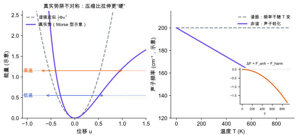

非谐性
谐振近似把晶格振动当成一组互不干扰的弹簧，但在高温、软模、强离子导体和分子晶体里它会给错频率、错自由能、错相变温度；这一条讲非谐性从哪里来、什么时候必须处理、以及几种处理办法各自的代价。
只是提示，不需要先读完才能往下看。
直觉直观解释
谐振近似把每个原子受到的回复力写成 -\Phi u：位移多大，力就多大，线性。真实势能面不是抛物线：
- 不对称：原子被压近时势能上升得比被拉开时快（排斥的短程性），所以同一个位移幅度，两个方向的能量代价不同；
- 有高阶项：位移大时，三阶、四阶项不能再忽略。
后果是声子频率不再是常数：温度升高、振幅变大，平均频率会移动（通常软化）。图左边画了真实势与谐振势的差别，右边画了频率随温度的变化，以及由此带来的自由能修正。

| 符号 | 是什么 | 图里对应哪部分 |
|---|---|---|
| u | 原子相对平衡位置的位移 | 左图横轴 |
| \frac{1}{2}\Phi u^2 | 谐振近似下的势能 | 左图灰色虚线 |
| 真实势 | 含高阶项的实际势能 | 左图紫色实线 |
| \omega(T) | 温度相关的有效声子频率 | 右图纵轴 |
| \Delta F | 用非谐频率与用谐振频率算出的自由能之差 | 右图插图 |
核心机制一句话：谐振近似只看二阶导数（曲率），非谐性看的是整个势的形状。当振动幅度相对于势的非谐尺度不小的时候，二阶导数就不够用了。
定义与公式数学与推导
非谐项从哪来
把总能量在平衡构型附近展开：
其中 u_i 是第 i 个自由度的位移；\Phi_{ij} 是二阶力常数（谐振项）；\Psi_{ijk} 与 \Xi_{ijkl} 是三阶、四阶力常数。谐振近似就是只保留 \Phi_{ij}，丢掉后面的所有项。
三阶项让势变得不对称，四阶项使势在两翼变陡或变缓。这两项合起来贡献了：
- 频率随温度移动（声子软化/硬化）；
- 声子之间的散射（有限寿命、热导率）；
- 热膨胀中超出准谐近似描述的部分。
自洽声子：把温度依赖吸收进频率
温度依赖有效声子 (temperature-dependent effective potential, TDEP) [Hellman et al. 2011] 的做法：在有限温度 MD 轨迹上，重新拟合一组有效二阶力常数 \Phi^{\mathrm{eff}}(T)，使它在采样到的位移分布下最好地描述能量。频率由 \Phi^{\mathrm{eff}}(T) 对角化得到。
自洽声子 (self-consistent phonon, SCP) [Tadano & Tsuneyuki 2015] 把这件事写成自洽方程：有效频率由四阶力常数与位移的均方值决定，而均方值又由频率决定，于是
其中 \omega_q^{(0)} 是谐振频率；\Xi 是四阶力常数（在声子表象里）；\coth 项是量子谐振子的位移方差，温度越高、频率越低，这一项越大，修正越强。这是 SCP 的核心思想——把四阶项的效果变成对频率的自洽修正。
为什么不只是“加个修正”
在谐振近似里，振动自由能是
其中第一项是零点能，第二项是热激发。频率变了这一整项都变——不只影响振动熵，也影响零点能。这就是为什么非谐性会改变相变温度、多晶型相对稳定性、以及热膨胀，而不只是“让声子谱好看一点”。
准谐近似 (quasi-harmonic approximation, QHA) 用“改变晶胞体积 → 改变频率”来处理热膨胀，本质上是把非谐性近似成对体积的依赖（见 准简谐近似与热膨胀）。当频率对温度本身的依赖（固定体积下）也很强时，QHA 不够，需要显式处理非谐性。
在本研究线里的样子对应与边界
- 软模与相变：铁电/反铁电材料的相变常由某个声子模式软化驱动。谐振声子谱只能给出“假设”，要判断相变温度与相变是否连续，需要把有限温度下的重正化频率算出来（见 声子与晶格动力学）。
- 离子导体：超离子转变常伴随明显的声子软化与大的原子振幅，谐振近似会给出错误的转变温度。触发本条目的 Li2O 工作就是这一类。
- 分子晶体：振动对多晶型能量差的贡献可以和方法本身的误差相当；分子晶体中的低频模式与分子间作用耦合，非谐性不可忽略 [Nyman & Day 2015]（该来源见 构象多晶型与构象代价）。含能材料与芳香分子晶体的热输运也更依赖非谐声子寿命。
- 有限尺寸修正：用周期性超胞做 MD 或声子计算时，振动熵与长波声子的贡献需要外推到无限大体系；对带电缺陷或极性体系还有额外的静电修正，Makov–Payne 修正就是这一类 [Makov & Payne 1995]。这是“数值上看起来非谐”的常见伪像来源。
- MLIP 场景：用机器学习势跑大超胞、长时间 MD 来直接采样非谐效应，是很自然的做法（见 机器学习势、分子动力学）；但 MLIP 在远离平衡的大振幅区域是否训练充分，决定了非谐效应是否可信——这与 通用机器学习势的微调 里“数据要覆盖什么”是同一个问题。
常见坑对应与边界
- 把谐振声子谱当有限温度声子谱：谐振频率是 0 K 结果，直接拿去算高温热容或自由能会系统性偏差。
- 以为 QHA 能处理所有非谐性：QHA 只处理“频率随体积变”，固定体积下的温度重正化它管不了。
- SCP 用在不稳定模式上：软到零的模式会让 SCP 不收敛，要改用 SSCHA 或直接 MD。
- 有限尺寸伪像被当成物理：超胞太小，长波声子缺失，振动熵与热容偏差大；做外推之前不要把差别解释成“非谐效应”。
- 三阶与四阶混用：只加三阶项会得到不对称但仍是简谐的能量面，热膨胀与频率移动主要靠四阶项，缺一项会得出错误趋势。
- MLIP 的非谐外推：训练集没有覆盖大振幅构型时，非谐结果看起来“很合理”但其实是外推。
检验自己对应与边界
参考资料
论文Tadano & Tsuneyuki 2015
尚未实际查阅，目前只是拟查阅书目
论文Errea et al. 2014
尚未实际查阅，目前只是拟查阅书目
论文Hellman et al. 2011
尚未实际查阅，目前只是拟查阅书目
论文Makov & Payne 1995
尚未实际查阅，目前只是拟查阅书目
论文Nyman & Day 2015
尚未实际查阅，目前只是拟查阅书目
分类晶体与固体 · 概念 · 研究线：压电与响应计算、机器学习势、结构预测与能量景观 · 状态：草稿